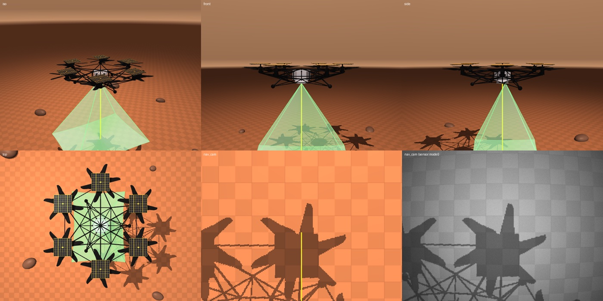
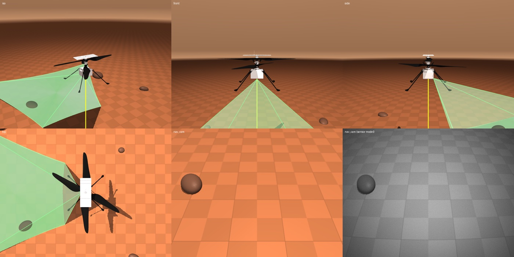
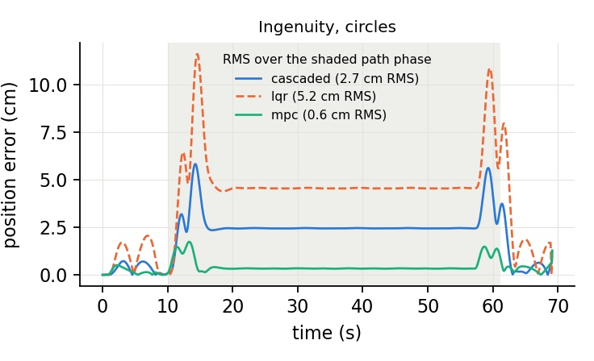

Personal project · open source
Mars-Heli-MuJoCo
Why
Flying on Mars is genuinely strange. The atmosphere is one or two percent of Earth’s density, so rotors have to spin near the limit set by tip Mach number. Gravity is 38% of ours, which helps. The thin air provides almost no aerodynamic damping, which is why Ingenuity ended up with very stiff rotors and fast, lightly damped rigid-body dynamics. And no facility on Earth reproduces Martian density and gravity at the same time in free flight, so you cannot simply go and test it.
Which makes simulation the whole development cycle. JPL has one — HeliCAT, which supported Ingenuity from concept through flight operations — but it is not public. The good open aerial simulators are all aimed at terrestrial multirotors. So there was a gap, and it looked like a fun way to spend a few weeks.
What it is
An open-source simulator on top of MuJoCo, modelling two vehicles: Ingenuity, the coaxial helicopter that actually flew, and the six-rotor Mars Chopper concept — a far bigger machine, roughly 4 m tip to tip and 30 kg, designed to carry science payloads over kilometres.

The one decision that made it work
Rotor speeds and swashplate servo positions are MuJoCo activation states rather than something bolted on outside the engine. That sounds like a plumbing detail and is actually the whole trick: it means the engine integrates the complete vehicle state, and MuJoCo’s finite-difference derivatives of the transition function can see the actuators too. Trim, linearization, LQR and MPC then fall out of the simulator almost for free, instead of needing a separate hand-derived model that drifts out of sync with the one you are actually flying.
The rotor model is anchored to real flight data rather than invented: momentum-theory thrust and torque coefficients reproduce Ingenuity’s 2700 rpm hover point at a density of 0.014 kg/m³, and the cyclic control effectiveness matches the pitch control derivative identified from actual flights.
And the rest of the world
Following the way HeliCAT is structured, the vehicle sits inside a set of reduced-order models: ground effect, IMU and laser-altimeter error models, a camera with lens distortion, vignetting, blur and sensor noise, dust-dependent illumination, and mean wind with Dryden turbulence. Rotor-wash dust gets kicked up in ground effect, mostly because it looks good.

Three controllers, one argument
There is a vehicle-agnostic cascaded controller, plus LQR and linear MPC built on the finite-difference linearization. Flying all three through the same circular mission makes the case better than any amount of prose.

The cascaded controller settles into a constant lag through the turn. LQR does worse, because it is reacting to an error it has no way to anticipate. MPC knows the path is coming and cuts the RMS error by a factor of several, at well under a millisecond per control step. Across both vehicles and all three missions, tracking lands somewhere between 1.4 cm and 11.6 cm, and the whole thing runs 15 to 31 times faster than real time on a laptop CPU.
The part where ground effect nearly ruins everything
This was my favourite thing to come out of it, and it is the one result that genuinely surprised me.
Sitting on the ground, Ingenuity’s rotors get about a 19% lift bonus from the ground cushion. The vehicle’s entire thrust margin is about 7.5%. The cushion is more than twice the control authority.
Simulate that honestly and the flight falls apart in a very specific, very funny way. The helicopter lifts off by itself during the idle phase, before it has been told to climb. It then lags its reference on the way up. And on the way down it simply refuses to land — hovering 12 to 19 cm above the ground on its own cushion until the rotors are cut, at which point the landing stops being a landing and becomes a drop. Maximum tracking error goes from 1.6 cm to 19.0 cm.
The fix is a feedforward term driven by the laser altimeter, which knows how high you are and therefore how much free lift you are about to get. With it, the error goes back to 1.4 cm and the vehicle lands properly. This is not an artefact of a toy model — a small thrust margin against a large ground cushion is a real characteristic of Mars rotorcraft, and it is exactly the kind of near-ground behaviour that my PhD work is about.
Learning to land
There is also a Gymnasium environment for the landing task, so it plugs into standard RL tooling, with a PPO policy and a scripted baseline built on the cascaded controller to compare against.
Everything is on GitHub — models, controllers, the RL task, the renderer and the scripts that produced every figure and video on this page. A full technical write-up documenting the models and their equations is in preparation.